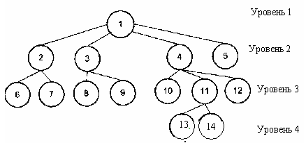
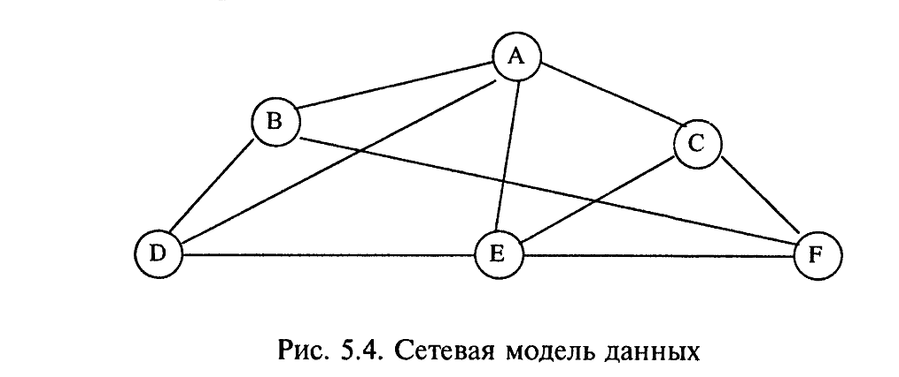
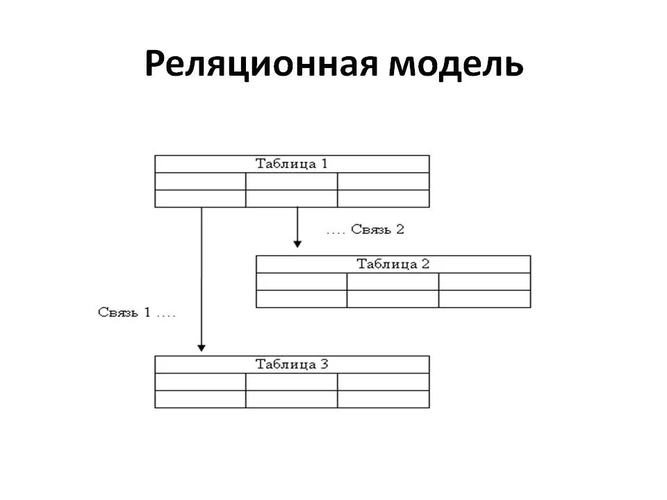
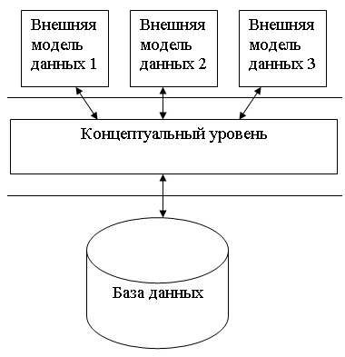

Данные. Модели данныз. Базы данных. Нормализация данных.
Данные. Что это?
Данными называется структурированная информация. То есть информация, уже частично переработанная.
Данные - зарегистрированная информация; представление фактов, понятий или инструкций в форме, приемлемой для общения, интерпретации, или обработки человеком или с помощью автоматических средств (ISO/IEC/IEEE 24765-2010) (Википедия)
Модели данных
Модель данных - формальная теория представления и обработки данных (применительно к БДб ист. Википедия).
Модель данных - это абстрактное, самодостаточное, логическое определение объектов, операторов и прочих элементов, в совокупности составляющих абстрактную машину доступа к данным, с которой взаимодействует пользователь. Эти объекты позволяют моделировать структуру данных, а операторы - поведение данных. (ист. Дейт К.Дж. Введение в системы баз данных).
Виды модели данных
Иерархическая
Сетевая
Реляционная

Реляционная модель - самая реализуемая модель в настоящее время.
Базы данных, основанные на реляционной модели:
- MS Access (все версии)
- MS SQL Server (все версии)
- MySQL (все версии)
- PostgreSQL (Числится как объектно-реляционная, но использует реляционную основу).
- и тд.
Реляционная модель данных (РМД) - логическая моедль данных, прикладная теория построения баз данных, которая является приложением к задачам обработки данных таких разделов математики, как теория множеств и логика первого порядка (ист. Википедия)
Происхождение слова "реляционный" - анг. "relation" - отношение.
В математике под отношением понимается двумерная таблица.
Понятия реляционной модели
- отношение - плоская таблица, состоящая из столбцов и строк; таблица, в которой каждое поле является атомарным;
- домен - совокупность допустимых значений, из которой берется значение соответствующего атрибута определенного отношения. С точки зрения программирования, домен - это тип данных;
- универсум - совокупность значений всех полей или совокупность доменов;
- кортеж - запись, строка таблицы;
- кардинальность - количество строк в таблице;
- атрибуты - поименованные поля, столбцы таблицы;
- степень отношения - количество полей (столбцов);
- схема отношения - упорядоченный список имен атрибутов.
- Ключ - атрибут (группа атрибутов), которые позволяют классифицировать кортеж (запись таблицы)
- Потенциальный ключ (уникальный ключ) - атрибут (группа атрибутов), которые позволяют идентифицировать кортеж (запись таблицы)
- Первичный ключ - обязательный уникальный ключ. Для каждой таблицы может быть определен только один первичный ключ.
- Вторичный ключ - любой другой ключ, кроме первичного. Может быть необязательным и неуникальным.
- Внешний ключ - служит для организации связей между таблицами
Базы данных. Системы управления базами данных.
база данных (англ. Database) - совокупность данных, хранимых в соответствии со схемой данных, манипулирование которыми выполняют в соответствии с правилами средств моделирования данных.
Система управления базами данных, сокр. СУБД (англ. Database Management System, сокр. DBMS) - совокупность программных и лингвистических средств общего или специального назначения, обеспечивающих управление созданием и использованием баз данных.
Архитектура СУБД

Реляционные базы данных
Группа баз данных и соответствующих им систем управления, основанная на реляционной модели данных.
Отношения в таких базах данных принято называть таблицами. Реляционные БД представляют из себя по сути таблицы, связанные посредством определенных инструментов, называемых ключами.
- Поле - множество значений одного типа, по сути столбец таблицы.
- запись - множество всех значений всех полей таблицы в пределах строки.
- Первичный ключ - уникальный идентификатор записи, или же поле, значения которого не повторяются.
- Внешний ключ - ссылка на первичный ключ другой таблицы, используемая для установления связей между таблицами.
Типы связей реляционных БД:
- Один-к-одному;
- Один-ко-многим;
- Многие-ко-многим;
Виды БД по способоу доступа
- Локальные БД;
- БД удаленного доступа.
БД удаленного доступа в свою очередь делятся на:
- Файл-серверные;
- Клиент-серверные;
- Встраиваемые.
В файл-серверных СУБД (Informix SE, Microsoft Access и т.д.) БД хранится на специализированном файл-сервере, а СУБД запускается на каждом клиенте. как правило такая архитектура используется внутри локальной сети.
В клиент-серверных СУБД (Oracle, DB2, PostgreSQL и т.д.) все основные компоненты СУБД выполняются на отдельном сервере БД, и на нем же хранится БД. На клиенте находится интерфейсная (клиентская) часть СУБД и выполняется код приложения.
Встраиваемые СУБД (BerkeleyDB, SQlite и т.д.) встраиваются в код приложений (информационные системы; клиенты) и полностью выполняется на том же компьютере и даже в том же процессе.
Как правило это библиотека, которая подключается в код программы и позволяет оспользовать функции СУБД прямо внутри программы.
Нормализация. Что это?
Нормализация - процесс уменьшения избыточности информации в БД с целью получения более эффективных и гиюких способов хранения данных.
Нормализация должна обеспечить:
- быстрый доступ к данным БД;
- исключение из структуры таблицы ненужного повторения данных;
- целостность данных.
Нормализация отношений - структурный метод ликвидации избыточности и несогласованности.
Основное назначение нормальных форм: приведение структуры базы данных к виду, обеспечивающему минимальную избыточность.
При нормализации:
любое значение должно храниться в базе в одном экземпляре, причем значение это не должно быть получено расчетным путем их других данных, хранящихся в базе.
Типы нормальных форм:
- первая нормальная форма (1NF)
- вторая нормальная форма (2NF)
- третья нормальная форма (3NF)
- нормальная форма Бойса-Кодда (BCNF)
- четвертая нормальная форма (4NF)
- пятая нормальная форма, или нормальная форма проекции-соединения (5NF или PJ/NF)
Свойства нормальных форм:
- Каждая следующая нормальная форма в некотором смысле лучше предыдущей;
- При переходе к следующей нормальной форме свойства предыдущих нормальных форм сохраняются.
Первая нормальная форма:
- Таблица не должна иметь повторяющихся записей;
- Должны отсутствовать повторяющиеся группы полей;
- Столбцы могут быть неупорядочены;
- Строки могут быть неупорядочены.
Вторая нормальная форма:
- Соответствует условия первой;
- Любое неключевое поле однозначно идентифицируется полным набором ключевых полей.
Третья нормальная форма:
- Соответствует условиям второй нормальной формы;
- Не существует неключевых элементов, которые функционально зависят от других неключевых элементов.
Нормальная форма Бойса-Кодда
- Соответствует условиям третьей нормальной формы;
- Все зависимые от первичного ключа атрибуты должны быть потенциальными ключами отношения.
Четвертая нормальная форма
- Соответствует условиям формы Бойса-Кодда;
- Все ее многозначные зависимости являются функциональными.
пятая нормальная форма
- Соответствует условиям четвертой нормальной формы;
- Все проекции содержат возможный ключ.
Порядок нормализации:
- Образовать новые структуры данных из повторяющихся групп элементов (наличие таких группы можно определить на основе сортировки);
- Если неключевые элементы зависят только от части ключа - перенести его в другую структуру данных, где ключом является часть ранее существовавшего (первоначального) ключа;
- Если неключевой элемент полностью определяется другим неключевым элементом - перенести его в отдельную структуру, ключом которой служит определяющий элемент.